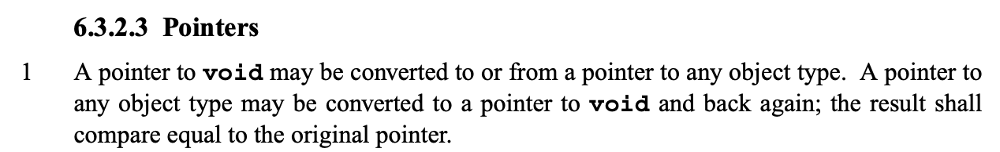
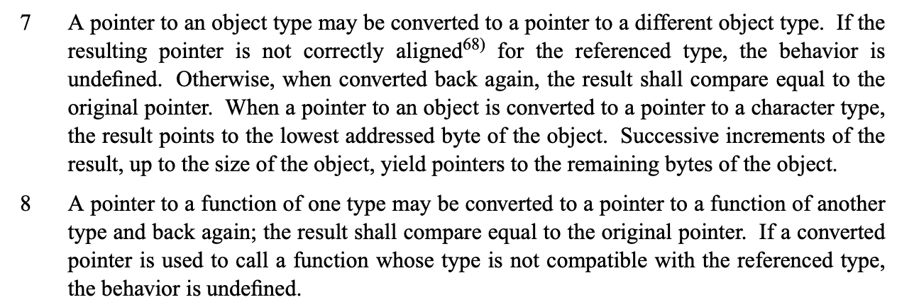
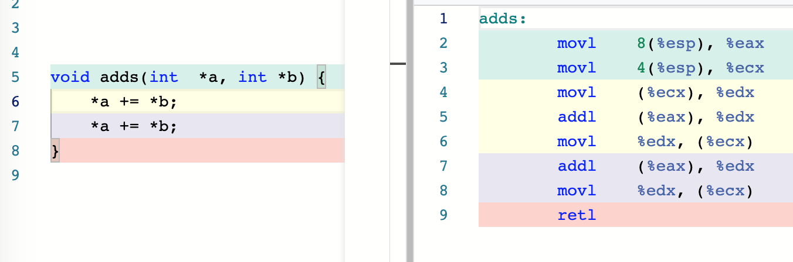
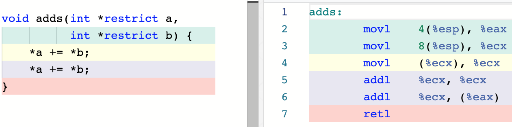
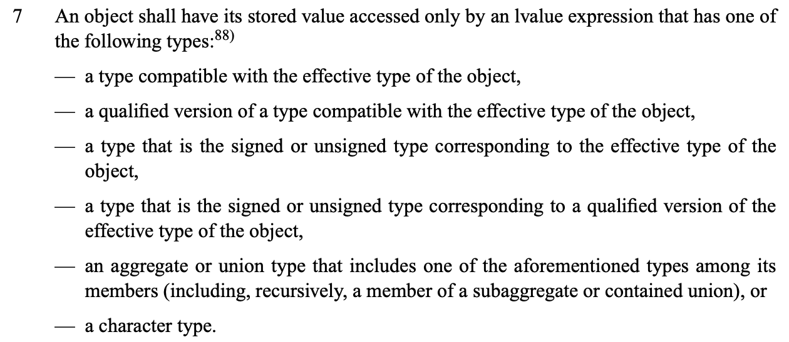
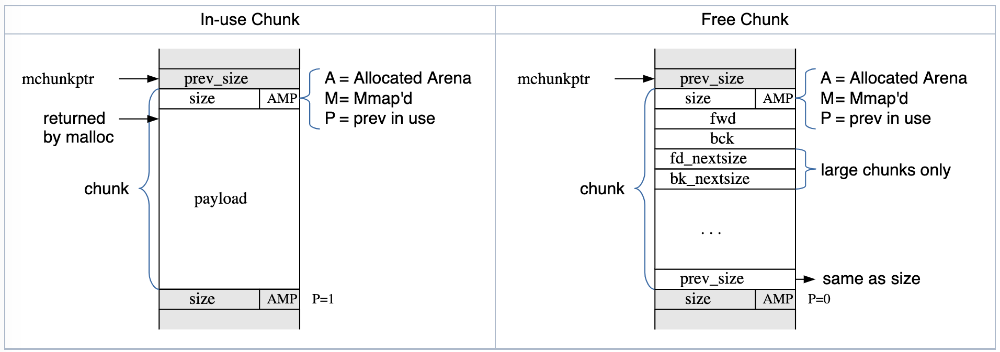

Typedef and qualifiers
typedef int my_int_32_t;
typedef struct foobar {
...
} foobar;
const char *s1, *s2;
const int x = 70;
const char * const msg = "hi";
volatile int counter;
Function pointers
int strcmp(const char *a, const char *b);
// This does not work:
// int *comparator(const char *a, const char *b) = strcmp;
int (*my_comparator)(const char *a, const char *b) = strcmp;
// OK, let's typedef it
typedef int (*comparator_t)(const char *, const char *);
comparator_t comparator = strcmp;
int result1 = (*comparator)("Roger", "David");
int result2 = comparator("Nick", "Rick");
qsort(..., comparator, ...);
Trying to typedef functions directly does not work
// int (comparator2)(const char *a, const char *b) = strcmp;
typedef int (comparator_t2)(const char *, const char *); // useless
// comparator_t2 comparator2 = strcmp;
// ^ error: function ‘comparator2’ is initialized like a variable
GCC integer overflow builtins
bool __builtin_add_overflow (type1 a, type2 b, type3 *res);
bool __builtin_sub_overflow (type1 a, type2 b, type3 *res);
bool __builtin_mul_overflow (type1 a, type2 b, type3 *res);
char a = 100, b = 200, c;
int d;
__builtin_add_overflow(a, b, &c);
// -> true == overflow
__builtin_add_overflow(a, b, &d);
// -> false == no overflow
Printing fixed-size types
The problem:
uint32_t var;
printf("%...", var); // ???
printf("%d", var); // fails on Win16
printf("%ld", var); // fails on 64-bit systems
scanf("%...", &var); // even worse
String literal joining
char *longstring = "There is no pain, "
"you are receding";
#include <inttypes.h>
#define PRId32 "d"
#define PRIu32 "u"
#define PRId64 "ld"
#define PRIu64 "lu"
#define SCNi32 "i"
#define SCNiPTR "li"
uint32_t var;
uintptr_t ptr;
printf("%" PRId32 "\n", var);
scanf("%" SCNi32 "\n", &var);
scanf("%" SCNiPTR "\n", &ptr);
Dynamic memory
// man malloc
#include <stdlib.h>
// C11, POSIX
void *malloc(size_t size);
void free(void *ptr);
void *calloc(size_t nmemb, size_t size);
void *realloc(void *ptr, size_t size);
// nonstandard
void *reallocarray(void *ptr, size_t nmemb, size_t size);
enum {buf_size = 20};
char *buf = malloc(buf_size);
// type conversion is automatic
// buf == NULL -> allocation error
// otherwise, contents of buf undefined here
strcpy(buf, "arc de Triomphe");
buf[0] = 'A';
...
free(buf); // OK
//free(buf); // UB -- double free
buf = NULL;
free(buf); // OK, free is a no-op here
-i--
int *array = calloc(30, sizeof(*array));
Similar to, but not the same thing as:
int *array = malloc(30 * sizeof(*array));
// check for NULL
memset(array, 0, 30 * sizeof(*array));
// same as malloc(100)
void *ptr = realloc(NULL, 100);
// don't do this
// ptr = realloc(ptr, 200);
void *tmp = realloc(ptr, 200);
if (!tmp) {
perror("realloc");
free(ptr);
return;
} else {
ptr = tmp;
}
Dynamic array
struct DynArray {
size_t size;
size_t capacity;
int *ptr;
} array = {};
void append(struct DynArray *arr, int value) {
if (arr->size + 1 > arr->capacity) {
size_t newcap = 2 * (arr->capacity + 1);
int *tmp = realloc(arr->ptr, newcap * sizeof(*tmp));
if (!tmp) {
// Handle allocation error
}
arr->ptr = tmp;
arr->capacity = newcap;
}
arr->ptr[size++] = value;
}
Better yet:
int *tmp = reallocarray(arr->ptr, newcap, sizeof(*tmp));
Where reallocarray is not available:
size_t size;
if (__builtin_mul_overflow(newcap, sizeof(arr->ptr[0]), &size)) {
// Handle overflow
}
int *tmp = realloc(..., size);
Example: delete from list
This won't work:
struct List {
int data;
struct List *next;
};
void remove(struct List *list, int key) {
while (list && list->data != key) {
list = list->next;
}
if (!list) {
return;
}
free(list);
list = list->next; // use after free
// no way to update the pointer
}
struct List {
int data;
struct List *next;
};
void remove(struct List **list, int key) {
while (*list && (*list)->data != key) {
list = &(*list)->next;
}
if (!*list) {
return;
}
struct List *next = (*list)->next;
free(*list);
*list = next;
}
Example: BST insertion
struct TreeNode {
int data;
struct TreeNode *left;
struct TreeNode *right;
};
int main(void) {
struct TreeNode *root = NULL;
...
}
struct TreeNode **descend(struct TreeNode **root, int key) {
while (*root && (*root)->data != key) {
if ((*root)->data > key) {
root = &(*root)->left;
} else {
root = &(*root)->right;
}
}
return root;
}
void insert(struct TreeNode **root, int key) {
struct TreeNode **where = descend(root, key);
if (!*where) {
*where = calloc(1, sizeof(struct TreeNode));
...
(*where)->data = key;
}
}
Sometimes fixed-size buffers are inconvenient:
char buf[100];
// scanf("%s", buf); <- banned
scanf("%99s", buf);
...
snprintf(buf, sizeof(buf), "%d bottles of beer on the wall", 50)
...
fgets(buf, sizeof(buf), stdin);
// gets(buf); <- banned from C11
char *buf = NULL;
scanf("%ms", &buf); // POSIX
...
free(buf);
char *buf = NULL;
asprintf(&buf,
"%d little Soldier Boys "
"went out to dine", 10); // GNU / BSD
...
free(buf);
// ssize_t getline(char **lineptr, size_t *n, FILE *stream);
char *line = NULL;
size_t linesize = 0;
getline(&line, &linesize, stdin); // POSIX
...
free(line);
 


Strict aliasing 
Union types
union U {
uint32_t u;
float f;
char bytes[4];
}
assert(sizeof(union U) == 4);
Glibc malloc

-
C++'s
newuses malloc -
Python: malloc + reference counting + GC
-
Go, Java: garbage collection
- Overcommit. OOM killer.
- Memory leaks, double free, use after free.
Address sanitizer
gcc -fsanitize=address myprog.c
Valgrind
Valgrind is in essence a virtual machine using just-in-time
(JIT) compilation techniques, including dynamic
recompilation. Nothing from the original program ever gets
run directly on the host processor. Instead, Valgrind first
translates the program into a temporary, simpler form called
Intermediate Representation (IR), which is a
processor-neutral, SSA-based form. ...
...usually, code run with Valgrind ...runs at 20% to 25% of
the speed of the normal program.